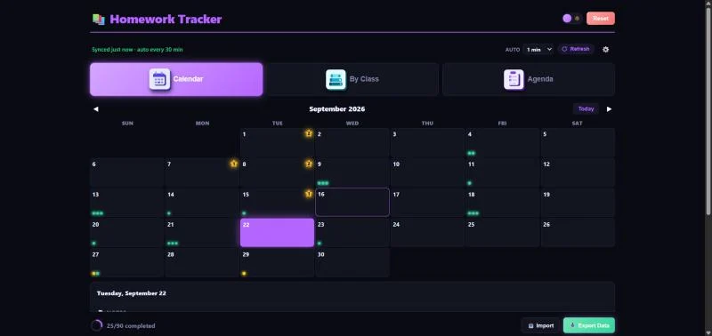
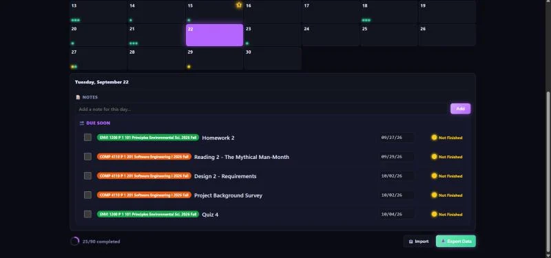
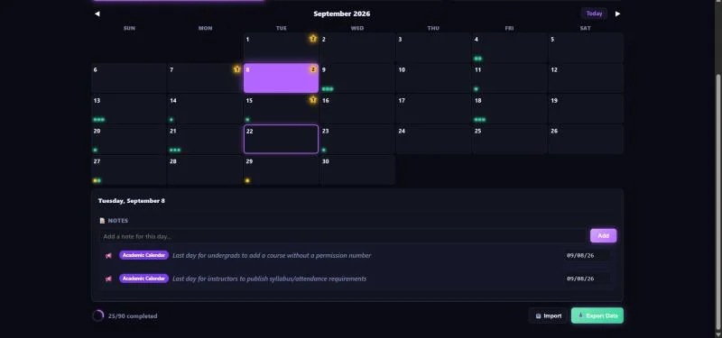
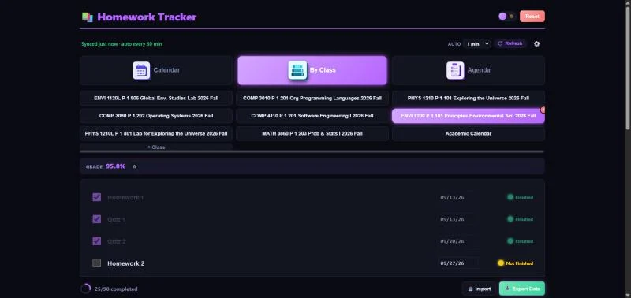

Homework Tracker Extension
A Chrome extension that brings Canvas assignments to life. It syncs automatically the moment you submit work, so there’s no manual refresh, and lays every due date, exam and deadline out on an interactive calendar with day-by-day detail views and custom notes.
- Built on Manifest V3 with a background service worker that detects Canvas activity in real time and syncs on a user-chosen interval.
- Color-codes each day by urgency and tracks completion across all enrolled classes with a progress ring.
- Light and dark themes, plus a side-panel mode so it stays open while you work.





1 / 5